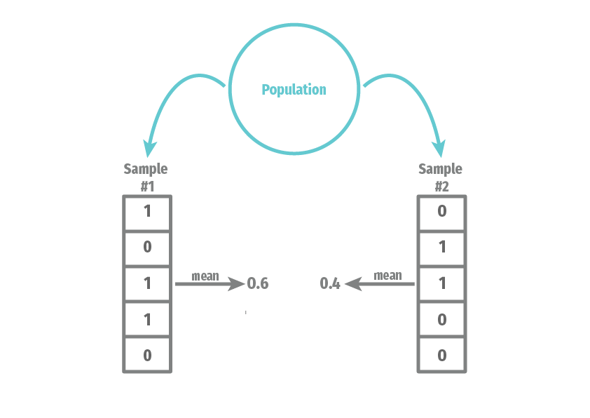

my_samp <- rbinom(n = 10, size = 5, prob = 0.4)
my_samp [1] 1 3 2 3 4 0 2 3 2 2table(my_samp)my_samp
0 1 2 3 4
1 1 4 3 1 Suppose you have been tasked with determining what fraction of a population supports a policy of increasing legal immigration limits. You have a sample of data on whether or not some individual respondents support the policy. How should you use the information you know (the data) to make a best guess about the information you don’t know (the fraction of the population)? This task is called estimation and it’s the cornerstone of most quantitative work in the social sciences.
You might think to yourself: this seems simple, just use the fraction of the sample that supports the policy as the best guess about the fraction of the population. And, as we’ll see, under certain conditions, this procedure is sound. The tricky part of statistics, though, is to understand what those “certain conditions” are and be able to determine if they hold in a given empirical setting. This line of thought may lead to uncomfortable questions such as, “where did this sample come from?”
We begin with perhaps the simplest and most sanguine of data origin stories: the random sample. The “sample” refers to the idea that our data is a subset of some larger population. The “random” modifier means that the subset was chosen by an uncertain process that did not favor one type of person versus another. Having a random sample from a population is an example of the “certain conditions” and our entry point into studying estimation in a rigorous manner.
Why focus on random samples so much even though many data sets are at least partially non-random or represent the entire population rather than a subset? Consider the famous story of a drunkard’s search for a lost bill:1
“I lost a $2 bill down on Atlantic avenue,” said the man.
“What’s that?” asked the puzzled officer. “You lost a $2 bill on Atlantic avenue? Then why are you hunting around here in Copley square?”
“Because,” said the man as he turned away and continued his hunt on his hands and knees, “the light’s better up here.”
Like the poor Bostonian, we focus on searching an area (random samples) that are easier to search because there is more light or, more accurately, easier math. Unlike this apocryphal tale, our search will help us better understand the darkness of non-random samples, because the core ideas and intuitions from random sampling form the basis for the theoretical extensions into more exotic settings.
Probability is the mathematical study of uncertain events and is the basis of the mathematical study of estimation. In probability, we assume we know truth of the world (how many blue and red balls are in the urn) and calculate the chances of events (getting more than give red balls when drawing ten from the urn). Estimation works in reverse. Someone hands you ten balls, six red and four blue, and your task is to guess the contents of the urn from which they came. We have to use our observed data to make an inference about the data-generating process.

An estimator is just a rule for converting our data into a best guess about some unknown quantity, like the fraction of the public that supports increasing legal immigration limits. What are the goals of studying estimators? In short, we prefer to use good estimators rather than bad estimators. But what makes an estimator good or bad? You probably have some intuitive sense that, for example, an estimator that always returns the value 3 is bad. Still, it will be helpful for us to formally define and explore some properties of estimators that will allow us to compare them and choose the good over the bad. We begin with an example that highlights two estimators that, at first glance, may seem similar.
Example 2.1 (Randomized control trial) Suppose we are conducting a randomized experiment on framing effects. All respondents receive some factual information about current levels of immigration. The message for the treatment group (\(D_i = 1\)) has an additional framing of the positive benefits of immigration, while the control group (\(D_i = 0\)) receives no additional framing. The outcome is a binary outcome on whether the respondent supports increasing legal immigration limits (\(Y_i = 1\)) or not (\(Y_i = 0\)). The observed data consists of \(n\) pairs of random variables, the outcome, and the treatment assignment: \(\{(Y_1, D_1), \ldots, (Y_n, D_n)\}\). Define the two sample means/proportions in each group as \[ \Ybar_1 = \frac{1}{n_1} \sum_{i: D_i = 1} Y_i, \qquad\qquad \Ybar_0 = \frac{1}{n_0} \sum_{i: D_i = 0} Y_i, \] where \(n_1 = \sum_{i=1}^n D_i\) is the number of treated units and \(n_0 = n - n_1\) is the number of control units.
A standard estimator for the treatment effect in a study like this would be the difference in means, \(\Ybar_1 - \Ybar_0\). But this is only one possible estimator. We could also estimate the effect by taking this difference in means separately by party identification and then averaging those party-specific effects by the size of those groups. This estimator is commonly called a poststratification estimator, but it’s unclear at first glance which of these two estimators we should prefer.
We have two goals in this chapter. First, we will introduce the entire framework of estimation and estimators. We will discuss different ways to compare the quality of estimators. These are properties that will be important to any estimator that you will meet now or in the future. Second, we will establish these properties for a general class of estimators that can be written as a sample mean. These results are useful in their own right since these estimators are ubiquitous, but the derivations also provide examples of how we establish such results. Building comfort with these proofs will help us understand the arguments about novel estimators we will inevitably see over the course of our careers.
Let’s begin by building a bare-bones probability model for how our data came to be. We might have a particular data set with a series of numbers representing the ages, political party affiliations, and opinions of some survey respondents. But we know that row 58 of our data could have produced a different set of number if a different respondent had been selected as row 58 or if that same respondent gave a different opinion about immigration because they happened to see a news story about it just before responding. To reason precisely about this type of uncertainty, we will write \(X_i\) as the random variable representing the value that row \(i\) of some variable will take, before we see the data. The distribution of this random variable would tell us what types of data we should expect to see.
Why do represent the data with random variables when we already know the value of the data itself? The study of estimation from a frequentist perspective (which is the perspective of this book) focuses on the properties of estimators across repeated samples. The random variable \(X_i\) represents our uncertainty about what value, say, age will take for respondent \(i\) in any of these samples, and the set \(\{X_{1}, \ldots, X_{n}\}\) represents our uncertainty about the entire column of ages for all \(n\) respondents.
For most of this book, we’ll focus on a relatively simple setting where we assume the data \(\{X_1, \ldots, X_n\}\) are independent and identically distributed (iid) draws from a distribution with cumulative distribution function (cdf) \(F\). They are independent in that information about any subset of random variable is not informative about any other subset of random variables, or, more formally, \[ F_{X_{1},\ldots,X_{n}}(x_{1}, \ldots, x_{n}) = F_{X_{1}}(x_{1})\cdots F_{X_{n}}(x_{n}) = \prod_{i=1}^n F(x_i) \] where \(F_{X_{1},\ldots,X_{n}}(x_{1}, \ldots, x_{n})\) is the joint cdf of the random variable and \(F_{X_{j}}(x_{j})\) is the marginal cdf of the \(j\)th random variable. They are “identically distributed” in the sense that each of the random variables \(X_i\) have the same marginal distribution, \(F\).
Note that we’re being purposely vague about this cdf—it simply represents the unknown distribution of the data, otherwise known as the data generating process (DGP). Sometimes \(F\) is also referred to as the population distribution or even just population, which has its roots in viewing the data as a random sample from some larger population.2 As a shorthand, we often say that the collection of random variables \(\{X_1, \ldots, X_n\}\) is a random sample from population \(F\) if \(\{X_1, \ldots, X_n\}\) is iid with distribution \(F\). The sample size \(n\) is the number of units in the sample.
You might wonder why we reference the distribution of \(X_i\) with the cdf, \(F\). Mathematical statistics tends to do this to avoid having to deal with discrete and continuous random variables separately. Every random variable has a cdf and the cdf contains all information about the distribution of a random variable.
Two metaphors can help build intuition about the concept of viewing the data as an iid draw from \(F\):
Note that there are many situations where the iid assumption is not appropriate. We will cover some of those later in the semester. But much of the innovation and growth in statistics over the last 50 years has been figuring out how to perform statistical inference when iid does not hold. Often, the solutions are specific to the type of iid violation you have (spatial, time-series, network, or clustered). As a rule of thumb, though, if you suspect iid is incorrect, your uncertainty statements will likely be overconfident (for example, confidence intervals, which we’ll cover later, are too small).
Finally, we have introduced the data as a scalar random variable, but often our data has multiple variables. In that case, we could easily modify \(X_i\) to be a random vector (that is, a vector of random variables) and then \(F\) becomes the joint distribution of that random vector. Nothing substantive changes about the above discussion.
In statistical inference, our goal is to learn about the data-generating process. Each data point \(X_i\) represents a draw from a distribution, captured by the cdf \(F\), and we would like to know more about this distribution. We might be interested in estimating the cdf at a general level or only some feature of the distribution, like a mean or conditional expectation function.
Example 2.2 (Population mean) Suppose we wanted to know the proportion of US citizens who support increasing legal immigration in the US, which we denote as \(Y_i = 1\). Then our quantity of interest is the mean of this random variable, \(\mu = \E[Y_i] = \P(Y_{i} = 1)\), which is the probability of randomly drawing someone from the population supporting increased legal immigration.
Example 2.3 (Population variance) Feeling thermometer scores are a prevalent way to assess how a survey respondent feels about a particular person or group. A survey asks respondents how warmly they feel about a group from 0 to 100, which we will denote \(Y_i\). We might be interested in how polarized views are on a group in the population, and one measure of polarization could be the variance, or spread, of the distribution of \(Y_i\) around the mean. In this case, \(\sigma^2 = \V[Y_i]\) would be our quantity of interest.
Example 2.4 (RCT continued) In Example 2.1, we discussed a typical estimator for an experimental study with a binary treatment. The goal of that experiment is to learn about the difference between two conditional probabilities (or expectations): the average support for increasing legal immigration in the treatment group, \(\mu_1 = \E[Y_i \mid D_i = 1]\), and the same average in the control group, \(\mu_0 = \E[Y_i \mid D_i = 0]\). This difference, \(\mu_1 - \mu_0\), is a function of unknown features of these two conditional distributions.
Each of these is a function of the (possibly joint) distribution of the data, \(F\). In each of these, we are not necessarily interested in the entire distribution, just summaries of it (central tendency, spread). Of course, there are situations where we are also interested in the complete distribution. To be able to speak about estimation in general, we’ll let \(\theta\) represent some generic quantity of interest. Point estimation describes how we obtain a single “best guess” about \(\theta\).
Some refer to quantities of interest as parameters or estimands (that is, the target of estimation).
Now that we have a target in mind, we can try to estimate it with our data. To do so, we first need a rule or algorithm or function that takes as inputs the data and returns a best guess about the quantity of interest. One of the most popular and useful algorithm would be to sum all the data points and divide by the number of points, which we can write mathematically as \[ \frac{X_1 + X_2 + \cdots + X_n}{n}. \] This is the much celebrated sample mean, and it provides a rule for how to take your data and produce a single-number summary of the data. We might go one pedantic step further and define it as a function of the data more explicitly, \[ \textsf{mean}(X_1, X_2, \ldots, X_n) = \frac{X_1 + X_2 + \cdots + X_n}{n}. \] We can use this model to provide a definition for an arbitrary estimator for an arbitrary quantity of interest.
Definition 2.1 An estimator \(\widehat{\theta}_n = \theta(X_1, \ldots, X_n)\) for some parameter \(\theta\), is a function of the data intended as a guess about \(\theta\).
It is widespread, though not universal, to use the “hat” notation to define an estimator and its estimand. For example, \(\widehat{\theta}\) (or “theta hat”) indicates that this estimator is targeting the parameter \(\theta\).
Example 2.5 (Estimators for the population mean) Suppose we would like to estimate the population mean of \(F\), which we will represent as \(\mu = \E[X_i]\). We could choose from several estimators, all with different properties. \[ \widehat{\theta}_{n,1} = \frac{1}{n} \sum_{i=1}^n X_i, \quad \widehat{\theta}_{n,2} = X_1, \quad \widehat{\theta}_{n,3} = \text{max}(X_1,\ldots,X_n), \quad \widehat{\theta}_{n,4} = 3 \] The first is just the sample mean, which is an intuitive and natural estimator for the population mean. The second just uses the first observation. While this seems silly, this is a valid statistic (it’s a function of the data!). The third takes the maximum value in the sample, and the fourth always returns three, regardless of the data.
When we view the data \(\{X_{1}, \ldots, X_{n}\}\) as a collection of random variables, then any function of them is also a random variable. Thus, we can view \(\widehat{\theta}_n\) as a random variable that has a distribution that induced by the randomness of the sample. Drawing two different samples of respondents will lead to two different estimates. For example, here we illustrate two samples of size \(n =5\) from the population distribution of a binary variable:

We can see that the mean of the variable depends on what exact values end up in our sample. We refer to the distribution of \(\widehat{\theta}_n\) across repeated samples as its sampling distribution. The sampling distribution of an estimator will be the basis for all of the formal statistical properties of an estimator.
One important distinction of jargon is between an estimator and an estimate. The estimator is a function of the data, whereas the estimate is the realized value of the estimator once we see the data. An estimate is a single number, such as 0.38, that we calculated in R with our data (our draw from \(F\)). The estimator, on the other hand, is a random variable that has uncertainty over what value it will take. Formally, the estimate is \(\theta(x_1, \ldots, x_n)\) when the data is \(\{X_1, \ldots, X_n\} = \{x_1, \ldots, x_n\}\), whereas we represent the estimator as a function of random variables, \(\widehat{\theta}_n = \theta(X_1, \ldots, X_n)\).
Where do estimators come from? This may seem like a question reserved for statisticians or methodologists or others who are responsible for “developing new methods.” But there is value in knowing how estimators are derived even if we never plan to do that ourselves. In particular, we can get a sense of the strengths and potential weaknesses of an estimator if know where it comes from. We will briefly introduce estimators based on parametric models, before turning to the main focus of this book, plug-in estimators.
The first method for generating estimators relies on parametric models, where the researcher specifies the exact distribution (up to some unknown parameters) of the DGP. Let \(\theta\) be the parameters of this distribution and we then write \(\{X_1, \ldots, X_n\}\) are iid draws from \(F_{\theta}\). We should also formally state the set of possible values the parameters can take, which we call the parameter space and usually denote as \(\Theta\). Because we’re assuming we know the distribution of the data, we can write the p.d.f. as \(f(X_i \mid \theta)\) and define the likelihood function as the product of these p.d.f.s over the units as a function of the parameters: \[ L(\theta) = \prod_{i=1}^n f(X_i \mid \theta). \] We can then define the maximum likelihood estimator (MLE) for \(\theta\) as the values of the parameter that, well, maximize the likelihood: \[ \widehat{\theta}_{mle} = \argmax_{\theta \in \Theta} \; L(\theta) \] Sometimes we can use calculus to derive a closed-form expression for the MLE. Still, we often use iterative techniques that search the parameter space for the maximum.
Maximum likelihood estimators have very nice properties, especially in large samples. Unfortunately, they also require the correct knowledge of the parametric model, which is often difficult to justify. Do we really know if we should model a given event count variable as Poisson or Negative Binomial? The attractive properties of MLE are only as good as our ability to specify the parametric model.
One essential intuition to build about statistics is the assumptions-precision tradeoff. You can usually get more precise estimates if you make stronger and potentially more fragile assumptions. Conversely, you will almost always get less accurate estimates if you weaken your assumptions.
The second broad class of estimators is semiparametric in that we will specify some finite-dimensional parameters of the DGP but leave the rest of the distribution unspecified. For example, we might define a population mean, \(\mu = \E[X_i]\), and a population variance, \(\sigma^2 = \V[X_i]\) but leave unrestricted the shape of the distribution. This approach ensures that our estimators will be less dependent on correctly specifying distributions we have little intuition about.
The primary method for constructing estimators in this setting is to use the plug-in estimator, or the estimator that replaces any population mean with a sample mean. Obviously, in the case of estimating the population mean, \(\mu\), this means we will use the sample mean as its estimate: \[ \Xbar_n = \frac{1}{n} \sum_{i=1}^n X_i \quad \text{estimates} \quad \E[X_i] = \int_{\mathcal{X}} x f(x)dx \] What are we doing here? We are replacing the unknown population distribution \(f(x)\) in the population mean with a discrete uniform distribution over our data points, with \(1/n\) probability assigned to each unit. Why do this? It encodes that if we have a random sample, our best guess about the population distribution of \(X_i\) is the sample distribution in our actual data. If this intuition fails, you can hold onto an analog principle: sample means of random variables are natural estimators of population means.
What about estimating something more complicated, like the expected value of a function of the data, \(\theta = \E[r(X_i)]\)? The key is to see that \(f(X_i)\) is also a random variable. Let’s call this random variable \(Y_i = f(X_i)\). Now we can see that \(\theta\) is just the population expectation of this random variable, and using the plug-in estimator, we get: \[ \widehat{\theta} = \frac{1}{n} \sum_{i=1}^n Y_i = \frac{1}{n} \sum_{i=1}^n r(X_i). \]
With these facts in hand, we can describe the more general plug-in estimator. When we want to estimate some quantity of interest that is a function of population means, we can generate a plug-in estimator by replacing any population mean with a sample mean. Formally, let \(\alpha = g\left(\E[r(X_i)]\right)\) be a parameter that is defined as a function of the population mean of a (possibly vector-valued) function of the data. Then, we can estimate this parameter by plugging in the sample mean for the population mean to get the plug-in estimator, \[ \widehat{\alpha} = g\left( \frac{1}{n} \sum_{i=1}^n r(X_i) \right) \quad \text{estimates} \quad \alpha = g\left(\E[r(X_i)]\right) \] This approach to plug-in estimation with sample means is very general and will allow us to derive estimators in various settings.
Example 2.6 (Estimating population variance) The population variance of a random variable is \(\sigma^2 = \E[(X_i - \E[X_i])^2]\). To derive a plug-in estimator for this quantity, we replace the inner \(\E[X_i]\) with \(\Xbar_n\) and the outer expectation with another sample mean: \[ \widehat{\sigma}^2 = \frac{1}{n} \sum_{i=1}^n (X_i - \Xbar_n)^2. \] This plug-in estimator differs from the standard sample variance, which divides by \(n - 1\) rather than \(n\). This minor difference does not matter in moderate to large samples.
Example 2.7 (Estimating population covariance) Suppose we have two variables, \((X_i, Y_i)\). A natural quantity of interest here is the population covariance between these variables, \[ \sigma_{xy} = \text{Cov}[X_i,Y_i] = \E[(X_i - \E[X_i])(Y_i-\E[Y_i])], \] which has the plug-in estimator, \[ \widehat{\sigma}_{xy} = \frac{1}{n} \sum_{i=1}^n (X_i - \Xbar_n)(Y_i - \Ybar_n). \]
Given the connection between the population mean and the sample mean, you will sometimes see the \(\E_n[\cdot]\) operator used as a shorthand for the sample average: \[ \E_n[r(X_i)] \equiv \frac{1}{n} \sum_{i=1}^n r(X_i). \]
Finally, plug-in estimation goes beyond just replacing population means with sample means. We can derive estimators of the population quantiles like the median with sample versions of those quantities. What unifies all of these approaches is replacing the unknown population cdf, \(F\), with the empirical cdf, \[ \widehat{F}_n(x) = \frac{\sum_{i=1}^n \mathbb{I}(X_i \leq x)}{n}, \] where \(\mathbb{I}(A)\) is an indicator function that take the value 1 if the event \(A\) occurs and 0 otherwise. For a more complete and technical treatment of these ideas, see Wasserman (2004) Chapter 7.
Once we start to wade into estimation, there are several distributions to keep track of, and things can quickly become confusing. Three specific distributions are all related and easy to confuse, but keeping them distinct is crucial.
The population distribution is the distribution of the random variable, \(X_i\), which we have labeled \(F\) and is our target of inference. Then there is the empirical distribution, which is the distribution of the actual realizations of the random variables in our samples (that is, the numbers in our data frame), \(X_1, \ldots, X_n\). Because this is a random sample from the population distribution and can serve as an estimator of \(F\), we sometimes call this \(\widehat{F}_n\).
Separately from both is the sampling distribution of an estimator, which is the probability distribution of \(\widehat{\theta}_n\). It represents our uncertainty about our estimate before we see the data. Remember that our estimator is itself a random variable because it is a function of random variables: the data itself. That is, we defined the estimator as \(\widehat{\theta}_n = \theta(X_1, \ldots, X_n)\).
Example 2.8 (Likert responses) Suppose \(X_i\) is the answer to a question, “How much do you agree with the following statement: Immigrants are a net positive for the United States,” with a \(X_i = 0\) being “strongly disagree,” \(X_i = 1\) being “disagree,” \(X_i = 2\) being “neither agree nor disagree,” \(X_i = 3\) being “agree,” and \(X_i = 4\) being “strongly agree.”
The population distribution describes the probability of randomly selecting a person with each one of these values, \(\P(X_i = x)\). The empirical distribution would be the fraction of our data taking each value. And the sampling distribution of the sample mean, \(\Xbar_n\), would be the distribution of the sample mean across repeated samples from the population.
Suppose the population distribution was binomial with four trials and probability of success \(p = 0.4\). We could generate one sample with \(n = 10\) and thus one empirical distribution using rbinom():
my_samp <- rbinom(n = 10, size = 5, prob = 0.4)
my_samp [1] 1 3 2 3 4 0 2 3 2 2table(my_samp)my_samp
0 1 2 3 4
1 1 4 3 1 And we can generate one draw from the sampling distribution of \(\Xbar_n\) by taking the mean of this sample:
mean(my_samp)[1] 2.2But, if we had a different sample, it would have a different empirical distribution and thus give us a different estimate of the sample mean:
my_samp2 <- rbinom(n = 10, size = 5, prob = 0.4)
mean(my_samp2) [1] 2The sampling distribution is the distribution of these sample means across repeated sampling.
As we discussed when we introduced estimators, their usefulness depends on how well they help us learn about the quantity of interest. If we get an estimate \(\widehat{\theta} = 1.6\), we would like to know that this is “close” to the true parameter \(\theta\). The sampling distribution is the key to answering these questions. Intuitively, we would like the sampling distribution of \(\widehat{\theta}_n\) to be as tightly clustered around the true as \(\theta\) as possible. Here, though, we run into a problem: the sampling distribution depends on the population distribution since it is about repeated samples of the data from that distribution filtered through the function \(\theta()\). Since \(F\) is unknown, this implies that the sampling distribution will also usually be unknown.
Even though we cannot precisely pin down the entire sampling distribution, we can use assumptions to derive specific properties of the sampling distribution that will be useful in comparing estimators.
The first property of the sampling distribution concerns its central tendency. In particular, we will define the bias (or estimation bias) of estimator \(\widehat{\theta}\) for parameter \(\theta\) as \[ \text{bias}[\widehat{\theta}] = \E[\widehat{\theta}] - \theta, \] which is the difference between the mean of the estimator (across repeated samples) and the true parameter. All else equal, we would like estimation bias to be as small as possible. The smallest possible bias, obviously, is 0, and we define an unbiased estimator as one with \(\text{bias}[\widehat{\theta}] = 0\) or equivalently, \(\E[\widehat{\theta}] = \theta\).
However, all else is not always equal, and unbiasedness is not a property to become overly attached to. Many biased estimators have other attractive properties, and many popular modern estimators are biased.
Example 2.9 (Unbiasedness of the sample mean) We can show that the sample mean is unbiased for the population mean when the data is iid and \(\E|X| < \infty\). In particular, we simply apply the rules of expectations: \[\begin{aligned} \E\left[ \Xbar_n \right] &= \E\left[\frac{1}{n} \sum_{i=1}^n X_i\right] & (\text{definition of } \Xbar_n) \\ &= \frac{1}{n} \sum_{i=1}^n \E[X_i] & (\text{linearity of } \E)\\ &= \frac{1}{n} \sum_{i=1}^n \mu & (X_i \text{ identically distributed})\\ &= \mu. \end{aligned}\] Notice that we only used the “identically distributed” part of iid. Independence is not needed.
Properties like unbiasedness might only hold for a subset of DGPs. For example, we just showed that the sample mean is unbiased, but only when the population mean is finite. There are probability distributions like the Cauchy where the expected value diverges and is not finite. So we are dealing with a restricted class of DGPs that rules out such distributions. You may see this sometimes formalized by defining a class \(\mathcal{F}\) of distributions, and unbiasedness might hold in that class if it is unbiased for all \(F \in \mathcal{F}\).
If a “good” estimator tends to be close to the truth, we should also care about the spread of the sampling distribution. In particular, we define the sampling variance as the variance of an estimator’s sampling distribution, \(\V[\widehat{\theta}]\), which measures how spread out the estimator is around its mean. For an unbiased estimator, lower sampling variance implies the distribution of \(\widehat{\theta}\) is more concentrated around the truth.
Example 2.10 (Sampling variance of the sample mean) We can establish the sampling variance of the sample mean of iid data for all \(F\) such that \(\V[X_i]\) is finite (more precisely, \(\E[X_i^2] < \infty\))
\[\begin{aligned} \V\left[ \Xbar_n \right] &= \V\left[ \frac{1}{n} \sum_{i=1}^n X_i \right] & (\text{definition of } \Xbar_n) \\ &= \frac{1}{n^2} \V\left[ \sum_{i=1}^n X_i \right] & (\text{property of } \V) \\ &= \frac{1}{n^2} \sum_{i=1}^n \V[X_i] & (\text{independence}) \\ &= \frac{1}{n^2} \sum_{i=1}^n \sigma^2 & (X_i \text{ identically distributed}) \\ &= \frac{\sigma^2}{n} \end{aligned}\]
An alternative measure of spread for any distribution is the standard deviation, which is on the same scale as the original random variable. We call the standard deviation of the sampling distribution of \(\widehat{\theta}\) the standard error of \(\widehat{\theta}\): \(\se(\widehat{\theta}) = \sqrt{\V[\widehat{\theta}]}\).
Given the above derivation, the standard error of the sample mean under iid sampling is \(\sigma / \sqrt{n}\).
Bias and sampling variance measure two different aspects of being a “good” estimator. Ideally, we want the estimator to be as close as possible to the true value. One summary measure of the quality of an estimator is the mean squared error or MSE, which is
\[
\text{MSE} = \E[(\widehat{\theta}_n-\theta)^2].
\] Ideally, we would have this be as small as possible!
We can also relate the MSE to the bias and the sampling variance (provided it is finite) with the following decomposition result: \[ \text{MSE} = \text{bias}[\widehat{\theta}_n]^2 + \V[\widehat{\theta}_n] \] This decomposition implies that, for unbiased estimators, MSE is the sampling variance. It also highlights why we might accept some bias for significant reductions in variance for lower overall MSE.
In this figure, we show the sampling distributions of two estimators, \(\widehat{\theta}_a\), which is unbiased (centered on the true value \(\theta\)) but with a high sampling variance, and \(\widehat{\theta}_b\) which is slightly biased but with much lower sampling variance. Even though \(\widehat{\theta}_b\) is biased, the probability of drawing a value close to the truth is higher than for \(\widehat{\theta}_a\). This balancing between bias and variance is precisely what the MSE helps capture and, indeed, in this case, \(MSE[\widehat{\theta}_b] < MSE[\widehat{\theta}_a]\).
1924 May 24, Boston Herald, Whiting’s Column: Tammany Has Learned That This Is No Time for Political Bosses, Quote Page 2, Column 1, Boston, Massachusetts. (GenealogyBank)↩︎
This approach to inference is often called a model-based approach since we are assuming a probability model in the cdf, \(F\). This is usually in contrast to a design-based approach to inference that views the population of interest as a finite group with fixed traits and the only randomness comes from the random sampling procedure.↩︎